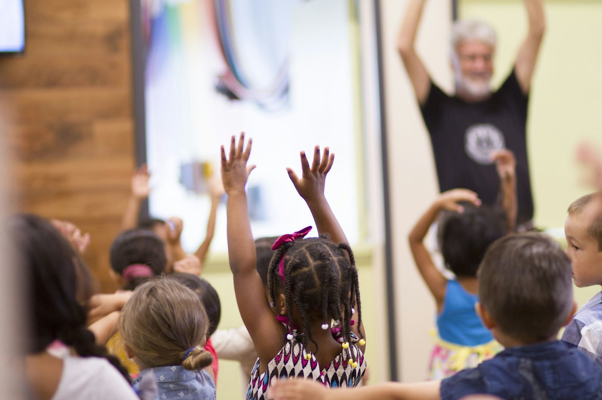
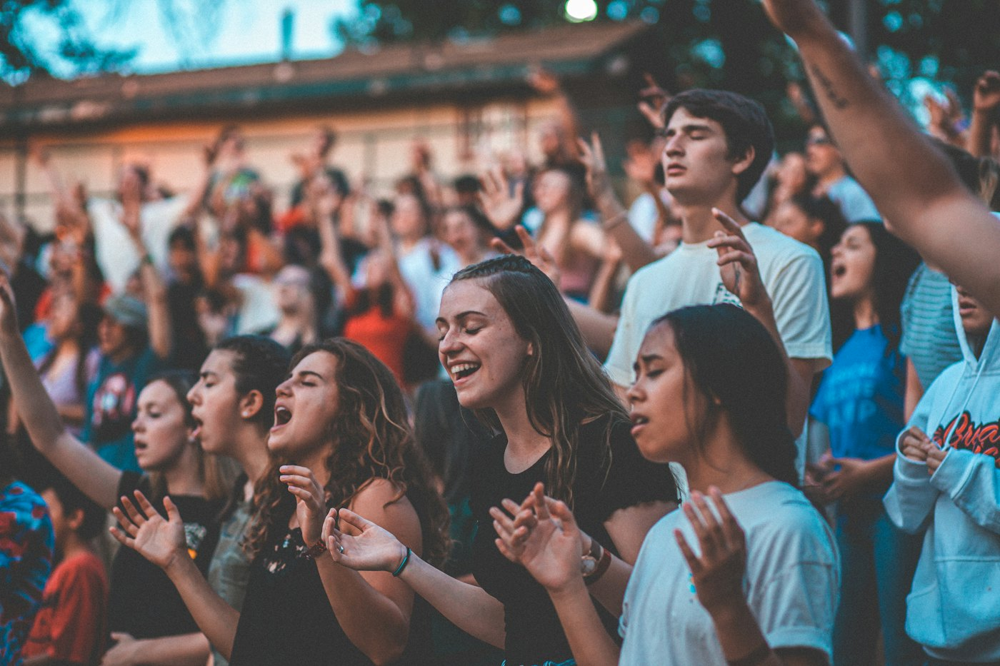
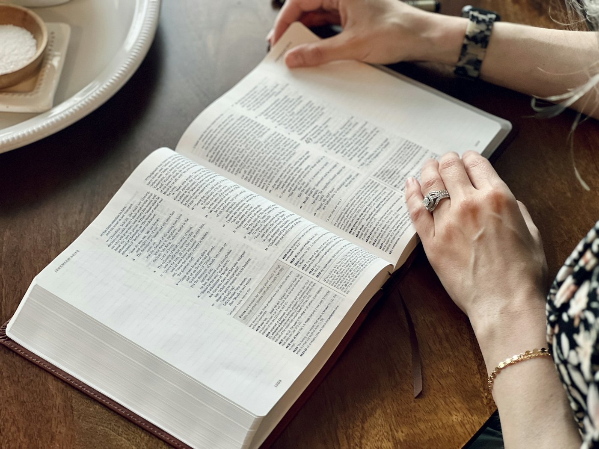
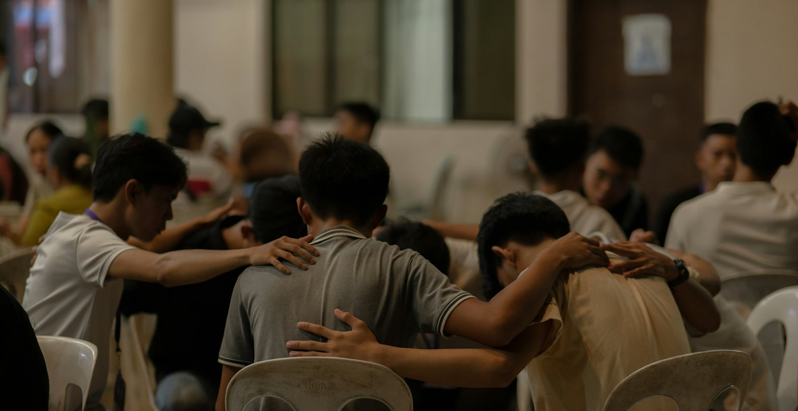

Our Ministries
Find your place to grow in faith alongside others.

Kids
We want church to be a place where your entire family is encouraged to draw closer to Christ—your kids included! That's why, during our Sunday morning worship services, we offer fun and engaging environments where children can learn and grow in faith as well. All our kids' programs are designed to be safe places where children in our church can learn new and exciting things about God while being led and cared for by adult volunteers from our congregation. It's our hope to encourage children to not only discover new things about God, but also begin to understand how those things matter in their own lives.
Get Connected
Students
In student ministry, we strive to lead students to become passionate followers of Christ. By partnering with parents and trained leaders, our mission is to teach and inspire the next generation to be founded in their faith and confident in their Creator. Through regular Bible study and small group gatherings, we encourage students to walk boldly towards Christ, apply His truth to their lives, and develop strong, life-changing relationships with the God of the universe. We want our students to know Jesus so that they might be excited about sharing His name and making Him known to others. Our prayer is that the church would be the future of our world and our students, the future of the church.
Get Connected
Women
We offer several opportunities for women to get involved in ministries at our church designed to grow and strengthen their faith alongside others. It's our desire to create environments where other women in the same stages and phases of life can develop authentic relationships with one another while being encouraged to grab hold of how God's truth intersects with and impacts their lives. Be sure to check our our events page for any upcoming events!
Get Connected
Men
Our Men's ministry programs all center on gathering as a community around the Word of God and living lives modeled after Christ. The goal of all of our Men's groups is to help challenge participants to live out their faith while impacting others with the power and truth of the Gospel. Be sure to stay connected and visit the events page for upcoming events and meeting times.
Get Connected